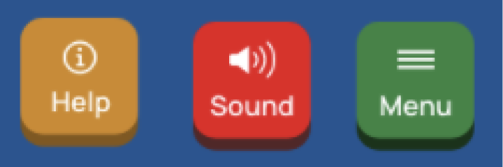
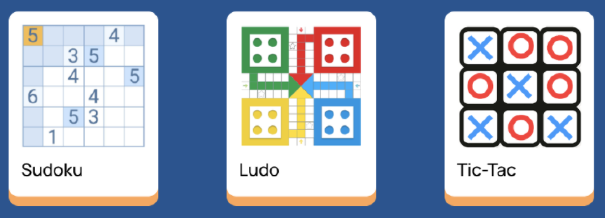
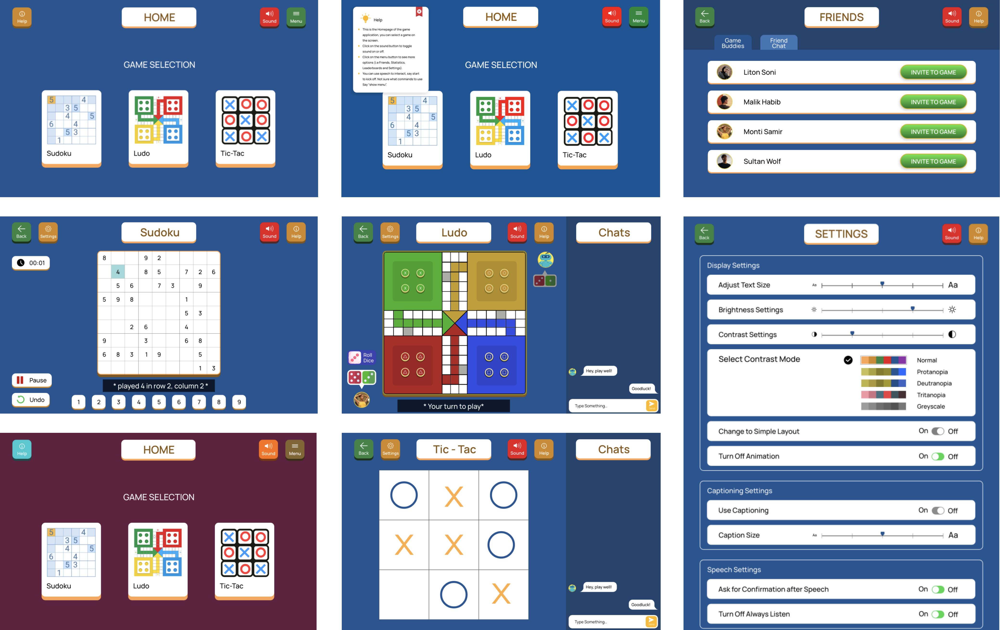
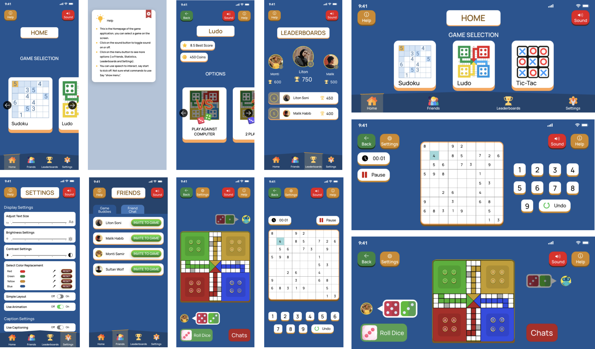
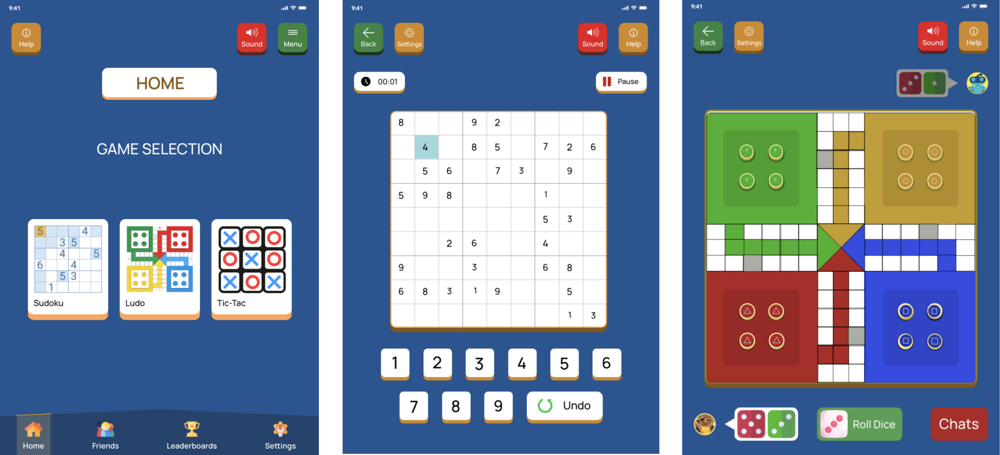
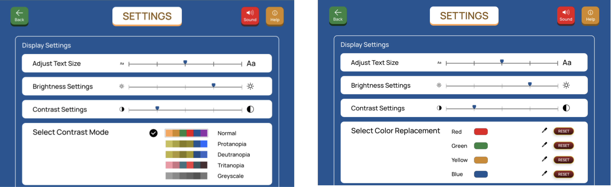

Overview
The Challenge
Games serve different purposes to different people, some play it for fun, others for work, and as its adoption increases today it is clear that it is not for a fixed category of people and should be made with considerations for everyone. However, it is clear that people with disabilities are not fully considered when designing them and in more recent times, they are considered as an afterthought.
Millions of people live with conditions that can affect their cognitive, visual, motor, or auditory functions but this shouldn’t limit them from getting access to or playing games. Making certain “small” accessibility choices available suddenly opens these games up to an even larger audience and more inclusive to disabled users.
Design Process
To tackle this challenge, I started with user research, moved into the ideation phase, analyzed guidelines to guide the design, followed by wireframes, user interface design, , and finally high-fidelity mockup, evaluations and iterations. More details on how I went through this process and the final product are shown below.
Duration
2 months
My Role
User Research
Visual Design
Interaction Design
Accessibility
Prototyping
Testing
Tools
Pen and Paper
Adobe XD
discovery
Kicked off the discovery process by trying to establish the project goals, understanding the user audience, their pain points, reviewing existing concepts, and picking a design strategy.
User Research
Approaching the project with a user-centered approach helped me to devlop empathy with users, and properly understand the target audience, know the questions they have before trying to create solutions for them. This application design aims to create a possible solution to address accessibility challenges in current games. The limitations and challenges disabled users face when trying to access desktop applications, and the assistive technology tools they use are first investigated, then a solution that allows these tools to function optimally is designed. Different devices, the gesture, interactions, and design issues associated with them are also explored to design appropriate or optimal solutions for those devices.
Personas
To put faces to the users, “get into their minds” , empathise with them better, see things from their own perspectives, and accurately answer the research questions, I created personas. The system was designed around 4 personas, with a focus on their impairments, the challenges they face while interacting with systems, the assistive technology tools they use, and what specific scenarios they’d use the system in.

Ahmid is a 23-year-old college student with mid-stage Parkison’s disease, and thus needs assistance performing tasks. Being at risk of fall and loss of balance, his movements are constrained and he has to stay at home for assistance which means he has limited interaction with people outside of his family. Ahmid has recently started playing video games online to increase his social interactions with people and make friends. He particularly enjoys the chat function in games. He’s looking for a new game application that has a collection of board games and also has the chat feature so he can add players as friends in games and send or receive messages from them. He uses the Tobii Eyetracker and Voice control feature to operate and navigate his devices.

Lack of proper surgery aftercare has caused damages to Lucy’s eyes after she was treated for Congenital Cataract as a child. Her vision has gotten progressively worse over time and her eyes have become very sensitive to light and blurry. She uses the JAWS screen reader and the Voice Control feature on her phone, but she sometimes gets frustrated using the voice control as she has to repeat some commands multiple times because it can’t pick up her accent or she’s in a crowded area. Lucy has just moved to Japan and is unable to download her favorite game app on the new regions app store. She's found new games but they are inaccessible and can’t be operated with Voice Control. She wants a game app that allows the use of Voice control and allows her to adjust the display and text settings to fit her preference.

Ted was just discharged from the army after 6 years of service after he developed Sensorineural hearing loss due to constant exposure to extremely loud noises from gunfire and explosions on the field. This has affected the loudness and clarity of the way he hears things and he has been fitted for a hearing aid. He uses closed captioning when watching videos or playing games online but has found that they are not very accessible. Playing Borderlands 2, he found that the captions were too tiny, the white text was blending into the background and pans across the entire length of the screen making it difficult to read during heated combat. Ted has just set up a YouTube channel to review games with a specific focus on their accessibility options. He’s mostly reviewed combat games until now, but he’s looking to create content for a wider audience. He’s looking for board games he can review.

Carol was diagnosed with 4th stage Alzheimer's about a year ago, and she currently lives in a nursing home. She has moderate cognitive decline which means she has trouble remembering personal history or moving around. Carol’s daughter has bought her an iPad and downloaded skype on it so they can speak to each other every day. It’s taking her a very slow time to figure out how to use the iPad herself as she thinks it’s too complex and has too many options. Her daughter has increased the text size on the iPad and has also turned on the Voice Control feature for her, but she’s wary about using it as she thinks it’s listening in on her. Carol’s doctor has recommended she plays puzzle games to keep her engaged, stimulated and combat cognitive decline. She wants the game to have a simple interface without too many options so she doesn’t get confused. Carol also wants a game she can play with her daughter in the evenings, she wants the game to have a chat feature so they can send each other messages.
By using the user personas, and looking at the user’s pain points, motivations, and core needs, I was able to come up with the core goals and define the functions of the proposed solution:
Core Goals
1Accessible
Colors and design are inclusive and non-prohitive.
2useful
Helps users achieve their goals efficiently.
3Findable
Features and elements to complete the main tasks and goals within the application should be easy to find.
ideating
The core idea of the design was to provide an overall aesthetic interface that kept the general playful and fun nature of games but still provided an effective and efficient way to allow users to achieve their goals. This was the general guide for the design choices for the entire application, and the first focus was to ensure that all the pages of the application had a consistent layout and the general navigation menu was repeated in the same order on every page (WCAG, 3.2.3). Different sketch options for the pages were explored, and a sketch with the navigation buttons, menu buttons, and page titles was at the top of each page was chosen. This ensured the menu options were easily accessible and the game options to be in the center of the screen, as they were the main focus. Also, this allowed users to quickly get all the information they needed even if they were just scanning through the page.
Initial Sketches
At this point, I started to think about how all of these could be integrated together, then sketch my thoughts of what I thought would work and analyze them testing different approaches. I explored different initial sketches, breaking down what could work from each one or what to take out. Some of the initial concepts can be seen below.


Guidelines
Ahmid has Parkinson’s disease which makes it difficult for him to properly use some interactions like sliding to the left or right or having to press a key for an extended period of time. To improve his experience with the GameBoard system, all elements on screen i.e buttons, texts e.t.c have a minimum target size of 44 by 44 px (WCAG, 2.5.5) which makes sure every element can be clicked easily.
Having blurry vision as an aftermath of Cataract, Lucy has had to make certain adaptations to how she uses any of her devices. She uses the JAWS screen reader, so it was important to add text alternatives for all images on the screen so it’s readable (WCAG, 1.1). Also, users can increase texts on screen up to 200% without losing content or functionality allowing them to find an appropriate size that works perfectly for them (WCAG, 1.4.4).
Also, poor contrast between elements on screen makes it difficult for content to be seen or understood and it was ensured that texts and interactive elements have a color contrast ratio of at least 4.5:1. This guarantees that users who can’t see the full-color spectrum are still able to read and perform actions. Throughout the application, instructions for performing actions such as buttons or links were designed so they didn't have to rely solely on sensory characteristics such as shape or color, also every button had an icon as well as a label to describe its function (WCAG, 1.3.3).
In games, colors are used very often as “bad” or “good” indicators and to represent different players or tokens. This can be a challenge for color-blind users who can’t see specific colors(Red, Green, and Blue), an option was added to the settings menu to allow users to select a different color mode based on the type of colorblindness they had, allowing the application to change the colors into a more suitable color for people with that type of colorblindness.
Ted has sensorial hearing loss which affects the loudness and clarity of the way he hears things, so he relies on closed captioning for watching or viewing contents on the screen. A lot of captions in games are not very accessible and little work has been done in this area and there are no specific guidelines to follow. But, captions and subtitles are similar and are generally represented in the same way, that is, with text at the bottom of the screen. Looking at subtitles a lot of work has been done in this area and bodies like the BBC and Netflix have studied and provided recommendations for optimal subtitles to ensure they are accessible to all users, and they can be transferred to this context for captioning. The (BBC subtitle guideline, 3.1) has recommended that each line of a subtitle has 37 - 42 characters and only two lines are shown on the screen at any particular time (BBC subtitle guideline, 3.3). It is also recommended to aim to leave a subtitle on screen for a minimum period of around 0.3 seconds per word (BBC subtitle guideline, 4.1).
Carol has Alzheimer's and often feels overwhelmed by having to deal with too many options on the screen. The (WCAG, 1.3) recommends designing content that can be presented in different ways without losing information or structure. Here, a simple layout that can be turned on in the settings, that allows users to use the application without animations and less information on the screen was designed. To accommodate users with memory problems, there’s also a help button on every screen so users can always find information about what page they are on and what actions they can perform at any point in time. Following (WCAG, 2.4.2), each page has a title that describes what it is for so users are aware of where they currently are. The layout and navigation of the application are kept consistent through all pages in the same relative order (WCAG, 3.2.3). This helps users become comfortable so they can predict where to find things on each page.
visual design



Color is an important part of how content is represented, viewed, and understood, but this can pose a problem for people with color vision deficiency or color blindness and can’t see a certain range of colors. It was important to find a color scheme that provides enough contrast between the text, content, and background. So that text and non-decorative images are legible for anyone including people with low vision or color deficiencies (WCAG, 1.4.3).
To ensure all the colors are distinguishable, a Palette with colors that are unambiguous both to colorblind and non-colorblind users (Okabe, 2008) was explored. Furthermore, a color blindness simulator application Sim Daltonism (Sim Daltonism, 2020) was used to look at the design from the perspective of a colorblind person and see what it looks like with different types of color blindness to ensure the colors selected were distinguishable and accessible. But it is not possible to completely cover all cases, so an option was included in the settings to allow people to select a color mode based on the type of colorblindness they have.
Keeping in line with (WCAG, 1.3.3), it was ensured that colors alone were not used to identify elements, instead a combination of color, icons, and labels were used for navigation and menu buttons.
A non - decorative and simple sans serif font “Manrope” was selected to use throughout the entire application. This Font is clean and modern which makes it legible but still looks fun to fit into the game aesthetic. Having a clear text hierarchy differentiating between the Page titles, subheadings and body was also important to help guide the user’s eyes on the flow of content on the page.
solution
GameBoard is a game web application with multiple board games where people can play against a computer or their friends. This application design aims to address accessibility challenges in games and provides a solution.

Multi-Platform Accessibility
Mobile devices, i.e phones, and tablets have smaller screens and thus have limited space to properly display the same contents from a web application. Looking at the WCAG guidelines and how can be applied or transferred to mobile content, touch targets were made to have a minimum size of at least 9mm by 9mm, and targets that are very close to this minimum size have a small amount of inactive space surrounding them(WCAG, 3.2), so users can click on them easily without accidentally clicking something else and performing the wrong action. With the size of the screen being smaller, the size of texts and elements on screen has been reduced and this might become an issue for users with visual impairments to properly see what’s on-screen. Users can change the text size to one that fits their preference and can be seen clearly. In places where there are forms, i.e the settings page , the form fields - in this case, sliders are positioned below rather than beside their labels so there’s enough space for it (WCAG, 2.1).
These devices are also usually touch-based and therefore accommodations have to be made for touch gestures. In places where users had to swipe to access more menus, an optional button was placed on the screen so users who have difficulty doing swipe gestures can still access this (WCAG, 3.3).
Some users use assistive technologies and are constrained to a particular orientation view. Ensuring the design was responsive to both portrait and landscape mode so users can use whichever they are more comfortable with without issues was important (WCAG, 4.1).
Mobile

Tablet

evaluation
A combination of the Think-aloud protocol and the Remote usability testing methods were used to carry out the tests and help with the collection and evaluation of data. Tested with users accross a range of demographics, age, computer proficiency level. The study had 6 participants, 2 participants had experience with using the Voice Control feature, 3 participants had used closed captioning while watching videos at some point, 1 participant had visual impairment myopia and wears glasses.The key things to be evaluated were the Usability, Findability, Accessibility of the application. The participants were asked to perform these tasks: Add Medication, Record body vitals, Record mood and symptoms, Read an article, Add appointment.
The participants were prompted to speak aloud and voice their thoughts while completing the tasks, to enable me to take notes of their observations or issues with the app while observing the process, the sessions were also followed up with a semi-structured interview to further get participants' thoughts on their experience with the system, and suggestions for potential improvements. SUS form participants completed at the end of the session formed the quantitative data. An SUS score of above 68 is considered a good score in the aspect of effectiveness, efficiency and ease of use. However, a participant had stated:
“Changing the color mode based on color blindness type is a nice addition, but it just really feels like changing the theme of the app. I don’t see it really making much of a difference.”
To address this I updated the design of the color selection mode in the settings page to allow users select and replace the Red, Green, Yellow, and Blue used in the background of all the pages with a color of their choice that fit their preference and is unambiguous (see Appendix G). This ensured that each user had a color palette that worked well with their particular color deficiencies and didn’t just look like a filter had been put over the application.
Iterative update

reflections
After the evaluation, it was observed that users found the app easy to use and they were able to achieve their goals after a short period of using it. If there was more time available, the next step would be to test with more users and gather more feedback based on actual use in day to day environments, and re-iterate the product to suit the needs of the users. A constant re-iteration process and and development would be implemented.
By creating sketches, wireframes, and paper prototype, helped to properly visualize as well as get feedback early on; this helped me save a lot of time and resources in the long run. Also, working with and following established guidelines like WCAG and BBC from the start of the project, helped in finding optimal techniques to achieve the main aim, making the application accessible.
Collaborating with a developer would help to better understand the possibilities of the product, and validate feasibility.
next